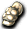

官方公告
【概要】
每年這個時期總是接連下雨的日子，讓人不想出門呢……。
不過，要是一直往負面想可不行啊！！
下雨多的季節，時間一久也會結束的。
要不要一邊欣賞這下雨的風景，一邊參加活動呢。
為了迎來好天氣，大家一起收集那個材料吧。
【實裝日】
2011年6月8日（三）維護～2011年6月15日（三）維護
【內容】
１.活動地圖傳送NPC「莫伊斯特」會出現在城鎮（盧亞斯・斯歐米・艾德安德）。
２.與「莫伊斯特」對話並支付「20萬Glod」即可移動到活動地圖。
３.與活動地圖上的「蕾妮」對話，她會說明活動內容。
４.在活動地圖收集所需道具後與「蕾妮」對話，即可獲得獎賞。
※活動地圖在被「莫伊斯特」傳送後經過30分鐘，會自動傳送到各職業城鎮。
※每天可無限次進入活動地圖。
※在活動地圖重新登入的話，會移動到各職業的職業城鎮。
※從活動地圖可透過「蕾妮」回到各職業城鎮。
※與梅雨相關的道具製作有可能失敗，也可能無法獲得獎賞。
活動內容
與盧亞斯・斯歐米・艾德安德鎮的「莫伊斯特」對話，支付「20萬Glod」後移動到活動地圖。
與活動地圖上的「蕾妮」對話，活動開始。
要收集漂亮的紙2張、橡皮筋1個、長繩1條，不過……
掉落率相當低，30分鐘大概能湊齊1～2組，或者湊不齊。
收集道具後再次與「蕾妮」對話，就會製作晴天娃娃。
晴天娃娃製作成功的話可以獲得雨天之箱。
失敗的話只會失去收集的道具，什麼也沒有。成功率大概五成左右？
※另外，任務可以無限次進行
可從雨天之箱取得的東西
各種利比亞、 仿造天使、仿造惡魔、
仿造天使、仿造惡魔、 仿冒天使、
仿冒天使、 仿冒惡魔、
仿冒惡魔、
 藝術家便帽、
藝術家便帽、 狐狸面具
狐狸面具
 獵人鐵手套、
獵人鐵手套、 黃金鳶盾、
黃金鳶盾、 十字軍護膝、
十字軍護膝、 機械髮帶、羅達髮帶
機械髮帶、羅達髮帶
 斯卡維斯手套、
斯卡維斯手套、

維維爾賽克、 基里珍珠耳環、
基里珍珠耳環、 自由科薩克、
自由科薩克、 森林人靴、
森林人靴、 混合藥水(持續時間3分鐘)、
混合藥水(持續時間3分鐘)、 速度藥水(光速)、
速度藥水(光速)、 氣力回復藥水、
氣力回復藥水、 全效藥水、最大BP藥水
全效藥水、最大BP藥水
 電漿捲軸、
電漿捲軸、 記憶之書、記憶之書（群組）、
記憶之書、記憶之書（群組）、 記憶之石、記憶之石（群組）
記憶之石、記憶之石（群組）